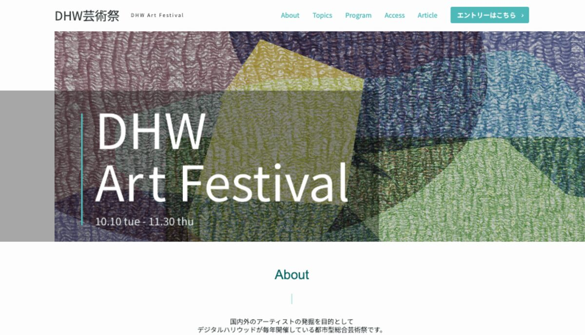
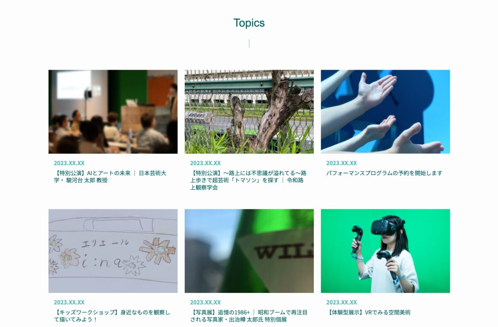
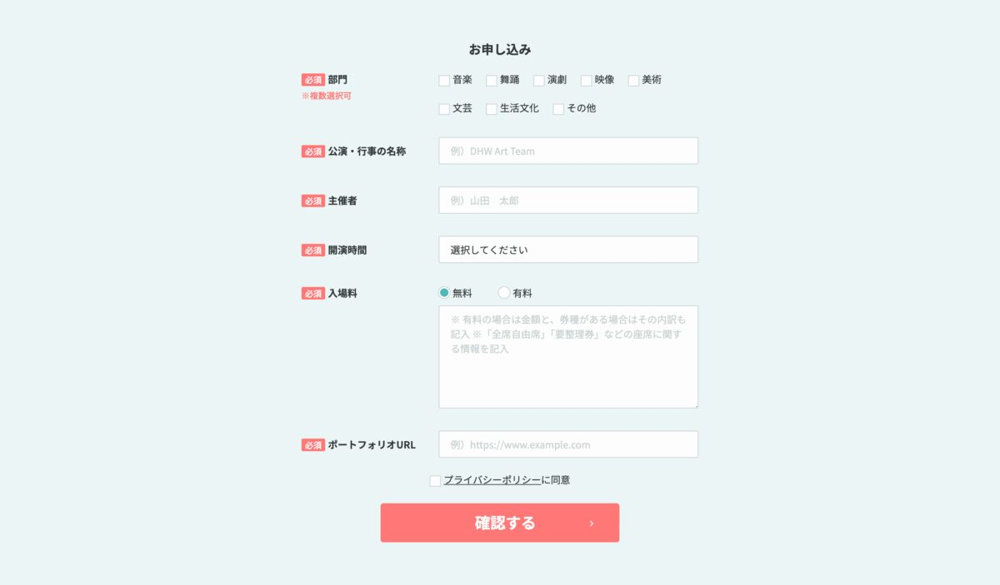

デジタルハリウッド オンラインのカリキュラムで取り組んだ、模写コーディング課題です。トップ・記事一覧・記事詳細・エントリーフォームの全4ページ構成で、フォーム実装やjQueryを使った要素の開閉なども実装しました。

デザインカンプ(お手本のデザイン画像)と素材一式をスクールから支給され、解説動画を見ながら1つずつコーディングしていく形式の課題です。デザインを自分で考えたものではありませんが、コーディング自体は自分の手で実装しました。
トップページ(index.html)、記事一覧(topics.html)、記事詳細(article.html)、エントリーフォーム(entry.html)の4ページで構成しています。エントリーフォームには、チェックボックス・ラジオボタン・セレクトボックス・テキストエリアなど、様々な入力要素を実装しました。

フォームのチェックボックス・ラジオボタンのチェックマークは、画像を使わずCSSの疑似クラス(:checked)と疑似要素(::after)だけで表現しています。四角形の一部の辺だけに線を引いて回転させることで、チェックマークの形を作る、というテクニックを学びました。ハンバーガーメニューの開閉にはjQueryを使い、クラスの付け外しで表示を切り替える仕組みも実装しています。

この課題は学習を始めたばかりの頃に取り組んだもので、正直に言うと今はjQueryのコードを細部まで説明できるほど覚えていません。ただ、OGP設定やfavicon設定、レスポンシブ対応、フォーム実装など、Web制作の基本を一通り体系的に経験できたのはこの課題のおかげだと感じています。